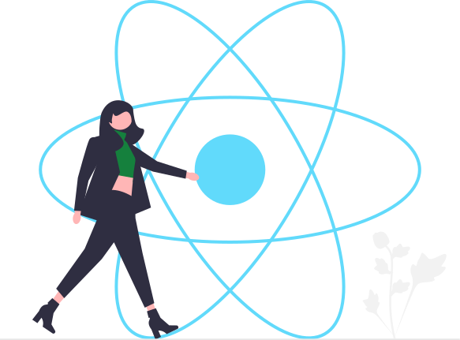

Welcome to Jeevesh Mahajan's Component Library!
I am following neog.camp level Zero and I want to make a component library
that would make all my projects look good and consistent.
@typography
This is the biggest heading
This is the second biggest heading
This is normal text. This is free flowing and will wrap at the end as a
paragraph as I keep going.
This paragraph will have bold text with strong
importance.
This text will be emphasised during speech and italicized by
default.
This is relatively smaller text.
@containers
@fluid container
This is a fluid container and it will go till the end of the page.
@center container
This is a center container. It will go till a given width and center
content.
@links
Primary link
Secondary link
@lists
@unordered list
I don't want that bullet in this list.
- Item One
- Item Two
- Item Three
@unordered inline list
- Item One
- Item Two
- Item Three
@reverse ordered list
- Item One
- Item Two
- Item Three
@ordered list
- Item One
- Item Two
- Item Three
@nav
@header

Jeevesh Mahajan - Web Developer
@section
@white section
This will have white background.
@off white section
This will have a gray background.
@footer